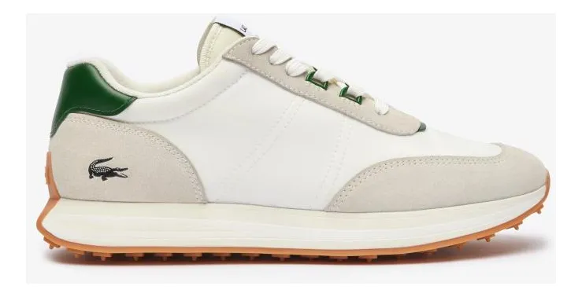

Tênis Esportivo Pro Max
O Tênis Esportivo Pro Max foi desenvolvido para quem busca conforto, desempenho e estilo no dia a dia. Ideal para treinos, caminhadas ou uso casual, ele oferece tecnologia de amortecimento avançado e material respirável que mantém seus pés sempre secos.
Conforto extremo para uso diário
Solado antiderrapante
Garantia de 90 dias
Ideal para corrida e academia
Design moderno e versátil
Tecido respirável
Alta durabilidade
Avaliação média 4.8⭐
Frete rápido para todo o Brasil
Troca grátis em até 7 dias
Produzido com materiais de alta qualidade, o Pro Max garante excelente absorção de impacto, reduzindo o cansaço durante longos períodos de uso. Seu design ergonômico se adapta ao formato do pé, proporcionando estabilidade e segurança em cada passo.